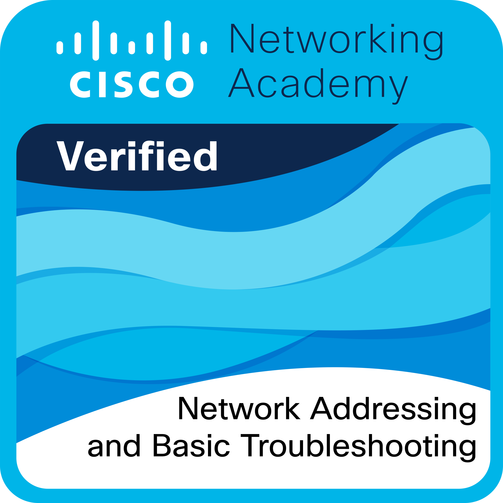
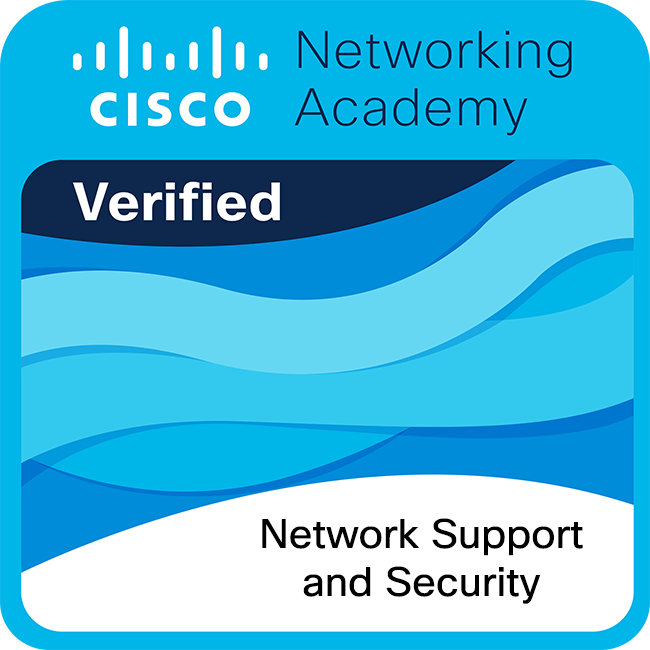
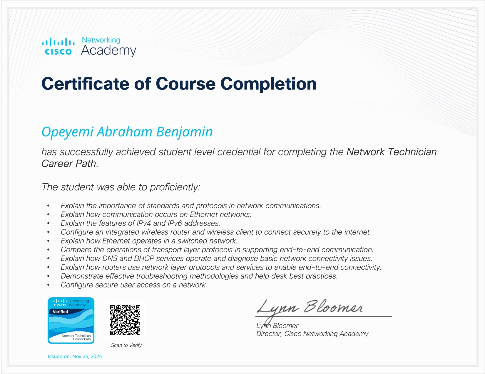

Computer Science student at Lagos State University (LASU). Aspiring SOC Analyst & SIWES Intern at LASUED. Passionate about solving complex problems in Cybersecurity and Computer Networking.
I am a dedicated Computer Science student building a "rock-solid foundation" in both technical and soft skills. My mission is to bridge the gap between academic theory and the high-pressure demands of a modern Security Operations Center (SOC).
My current focus is on developing advanced expertise in Network Support and Information Security. While I am a student at LASU, I am currently gaining practical institutional experience as a SIWES Intern at LASUED.
Computer Science, LASU (Exp. 2027)
SIWES Intern, LASUED
Network Security & Threat Detection
Engineered a professional SOC ecosystem. Configured **Active Response** to neutralize brute-force attacks in < 60s, integrated **Sysmon** for deep telemetry, and executed **CIS Compliance** audits.
Architected a professional MySQL database for the LASUED SIWES unit to digitize manual student records, supervisor assignments, and document status tracking.
Practical labs documenting network architecture and protocol analysis (OSI, TCP/IP, DNS) as part of my professional certification roadmap.
Top-tier credentials in Cybersecurity and Networking.


